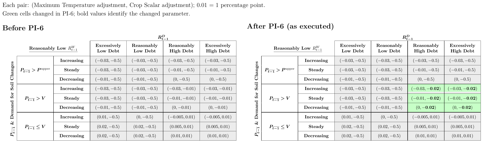

PI-6: Introduce Cultivation System and Crop Ratio Changes
Executed on March 12, 2025 at 22:23 UTC.
Summary
- Cultivation System: Introduce the Cultivation System to dynamically issue Soil in line with demand for it.
- Minimum Soil Issuance: Create a parameter for the minimum number of Soil that can be issued when the time-weighted average and instantaneous Pinto supply deltas are nonpositive and their minimum absolute value is nonzero and set it to 50 Soil. Each delta measures the Pinto shortage or surplus relative to the $1 peg, using time-weighted average or instantaneous pool reserves. A negative value indicates a surplus.
- Generalized Gauge System: Create a generalized gauge system such that any future state variable can be updated via a gauge upon the
gmcall with minimal development effort.
- Maximum Crop Ratio Increase: Increase the Maximum Crop Ratio from 100% to 150%.
- Crop Scalar Adjustments: Properly increase the magnitude of the Crop Scalar decreases from 1 to 2 percentage points per Season when price is Reasonably High, the Pod Rate is Reasonably or Excessively High and the L2SR is Reasonably Low as intended in PI-5 (detailed below).
Links
- Implementation Commit:
74fdaffaecac5d3c915c19e1542095eace3e6889
Problems
1. Cultivation System
When the protocol issues significant numbers of Soil that are not Sown into, it signals to the market that the protocol is not creditworthy. When the protocol issues less Soil than there is demand for, it is not borrowing efficiently. The protocol lacked a method to discover the optimal number of Soil to issue.
2. Minimum Soil Issuance
At particularly low numbers of Soil, demand for Soil cannot be accurately measured. With the introduction of the Cultivation System, which starts the number of Soil available at a very low number and then ramps it up to meet demand, the protocol may issue too little Soil to accurately measure demand.
3. Generalized Gauge System
There are potentially several state variables that could be adjusted at the beginning of each Season, but without a generalized mechanism to do so each variable required a bespoke implementation.
4. Maximum Crop Ratio Increase
The Maximum Crop Ratio of 100% limited the ability of the protocol to create a sufficiently strong incentive to counter the preference demonstrated by the market to hold Deposited LP over Deposited Pinto when it is trying to incentivize LP -> Pinto Converts.
5. Crop Scalar Adjustments
When price is Reasonably High, the Pod Rate is Reasonably or Excessively High and the L2SR is Reasonably Low, the Crop Scalar did not decrease quickly enough. PI-5 intended to increase the magnitude of the Crop Scalar adjustments in these instances, but an encoding error left the decreases at 1 percentage point per Season instead of the intended 2.
Solutions
1. Cultivation System
Introduce the Cultivation System, which uses a gauge to adjust the Cultivation Factor, which acts as a scalar on Soil issuance relative to the maximum number of Soil the protocol would be willing to issue if there was infinite demand for Soil.
The Cultivation Factor is updated as follows:
Where:
- p is the Cultivation Factor, initialized to 0.5 and bounded between 0.01 and 1.
- The adjustment coefficient is calculated below.
- P is the previous Season’s time-weighted average Pinto price in the Well with the largest USD liquidity, capped at 1. A zero price skips the update.
The adjustment coefficient decreases linearly from 2% to 0.5% as the Pod Rate rises from 3% to 25%, and is clamped outside those bounds. Rᴰ denotes the Pod Rate. Its lower and upper bounds are 3% and 25%, respectively.
2. Minimum Soil Issuance
The Cultivation System includes a 50-Soil floor when the time-weighted average and instantaneous Pinto supply deltas are nonpositive and their minimum absolute value is nonzero to prevent instances where the protocol issues too little Soil to be able to accurately measure demand.
Therefore, we define the Soil issued when the time-weighted average and instantaneous Pinto supply deltas are nonpositive to be:
Where:
- is the smaller absolute value of the time-weighted average and instantaneous Pinto supply deltas.
- is the Pod Rate.
- is the L2SR.
- is the Cultivation Factor, initialized to 0.5. When the time-weighted average Pinto supply delta is nonpositive but the instantaneous Pinto supply delta is positive, Soil instead equals 1% of the absolute time-weighted average Pinto supply delta times the Pod Rate coefficient, without the 50-Soil floor.
- The divisor 24 represents the configured 86,400-second Soil distribution period in one-hour Seasons. These normalized equations omit sequential integer rounding. A Sow records sellout when remaining Soil is at most 1 Soil. The Cultivation Factor uses that recorded sellout from the previous Season.
3. Generalized Gauge System
Add the following to AppStorage:
struct GaugeData {
GaugeId[] gaugeIds;
mapping(GaugeId => Gauge) gauges;
}
enum GaugeId {
CULTIVATION_FACTOR
}
Introduce a Gauge Implementation as:
struct Gauge {
bytes value;
address target;
bytes4 selector;
bytes data;
}
A gauge selector must adhere to the following function definition:
foo(
bytes memory value,
bytes memory systemData,
bytes memory gaugeData
) external view returns
(
bytes memory,
bytes memory
)
The function must return the updated encoded value first and encoded gauge data second.
Gauges have a GaugeId that is set upon adding a new Gauge. Gauges are called during the gm call, upon which each Gauge’s returned value and/or data are stored.
The following new events are associated with the generalized gauge system:
event Engaged(GaugeId gaugeId, bytes value);
event AddedGauge(GaugeId gaugeId, Gauge gauge);
event RemovedGauge(GaugeId gaugeId);
event UpdatedGauge(GaugeId gaugeId, Gauge gauge);
4. Maximum Crop Ratio Increase
Update s.sys.evaluationParameters.maxBeanMaxLpGpPerBdvRatio from 100e18 to 150e18. These 18-decimal fixed-point values represent 100% and 150%. In the code name, Bean denotes Pinto, Bdv denotes PDV, and MaxLpGp denotes maximum LP gauge points.
5. Crop Scalar Adjustments
Update s.sys.casesV2 to reflect the Crop Scalar decreases from 1 to 2 percentage points per Season for case IDs 57–59 and 66–68. These six cases cover Reasonably High price, Reasonably Low L2SR, and Reasonably or Excessively High Pod Rate across decreasing, steady, and increasing Soil demand. Their encoded adjustment changed from −1e18 to −2e18.


Rationale
1. Cultivation System
Starting with a very low number of Soil minimizes the instances where the protocol fails to find demand for Soil by a wide margin while the protocol is raising the Maximum Temperature to discover the interest rate at which it can attract demand. Instead, the Cultivation System enables the protocol to ramp up available Soil once demand for Soil has been discovered. This should result in lower overall Maximum Temperatures necessary to reduce supply.
2. Minimum Soil Issuance
Setting a minimum Soil of 50 when the time-weighted average and instantaneous Pinto supply deltas are nonpositive and their minimum absolute value is nonzero helps ensure that the protocol can accurately measure demand for Soil even in instances where the Cultivation System would otherwise result in there being a de minimis number of Soil.
3. Generalized Gauge System
Previously, adding 1) State that updates on a gm call and 2) Logic that executes during the gm call required 1) significant technical understanding of the entire gm call, 2) an implicit understanding of the current ordering of actions within the gm, and 3) appending or manipulating the state stored on the Pinto Diamond Contract. The Generalized Gauge System introduces a framework in which new features can be appended to the gm call that 1) isolates state and logic on a Gauge basis, and 2) Introduces explicit execution ordering (i.e., the order in which the Diamond State changes within a gm call), in a modular and composable fashion, such that iterating on Gauges requires minimal onboarding and minimal background knowledge of other Gauges, in a way that minimizes additional security risk per additional Gauge.
4. Maximum Crop Ratio Increase
Prior to this change, the Maximum Crop Ratio of 100% imposed an upper bound on the ratio of Seeds per PDV of Deposited Pinto and the maximum Seeds per 1 PDV of LP Deposited of 1:1. The idea behind this limit was that at all times, the protocol should not express a preference to have Depositors hold Deposited Pinto over Deposited LP because it would mean that the protocol is not looking to preserve liquidity.
However, this failed to capture the fact that the market prefers to hold Deposited LP over Deposited Pinto, such that even if the protocol offers Deposited Pinto as many Seeds per PDV as the highest-rewarded Deposited LP token, the market may still prefer to hold LP. By setting the Maximum Crop Ratio too low, the protocol has therefore been unable to sufficiently incentivize Converts and return the price to its value target consistently when the price is too low.
5. Crop Scalar Adjustments
When price is Reasonably High, the Pod Rate is Reasonably or Excessively High and the L2SR is Reasonably Low, the Crop Scalar should decrease more quickly to more aggressively encourage Converts from Pinto to LP tokens to preserve liquidity. In similar instances but where the L2SR is Excessively Low, the protocol already acts incredibly aggressively to preserve liquidity, but in instances where the L2SR is Reasonably Low, it does not act any more aggressively than when the L2SR is Reasonably or Excessively High. This change refines the Crop Scalar change to better factor in the fact that the L2SR is lower than optimal.
Contract Changes
Initialization
Executed InitPI6.init() at 0x43474d1dabd2213ff6c18b5ba69f8c847808c2c4. It registered the Cultivation Factor gauge at 0.5, set the Soil distribution period to 86,400 seconds (24 hours) and minimum Soil issuance to 50 Soil, installed the corrected Crop Scalar cases, increased the maximum Crop Ratio from 100% to 150%, and reset the Crop Scalar to 67%.
Facet Changes
| Facet | Action | Previous Implementation | New Implementation |
SeasonFacet | Replace | 0xfc52fc3c8a29f74603006ff03915770014d9f049 | 0xa932cab249fc9ddd073cdb5d40bf304a50025cd6 |
SeasonGettersFacet | Replace | 0xfa0093b9ca5d00c9e6623767eb09489d90abf150 | 0xf3d017981d0818274210661ba3cc85d143afa78e |
GaugeFacet | Replace | 0x2a8827a73de0703b3f6e24895818a3e6d9f8eeba | 0x25ce5e07e26b4140086f28834dea1c092fc10f90 |
GaugeFacet | Add | N/A | 0x25ce5e07e26b4140086f28834dea1c092fc10f90 |
GaugeGettersFacet | Replace | 0x04912d77f69bd03f8846a432b0abacfc028bea33 | 0xb1cb5aa3c2e91268aae9c97d59ad90d8df979da3 |
ClaimFacet | Replace | 0x28bcfb5ad84dd460f2fd080dfd706105b8fc21c6 | 0xcbb67c0dadf1c2774215d8afd4fef34c7741474b |
PipelineConvertFacet | Replace | 0x508320dcc2b4e9f79555bcae1478e6ce736b22ab | 0x1c3ecf2ae6bd491d112f5a2cea5927a231437437 |
SiloGettersFacet | Replace | 0x6c1dc649e93be43fff670a2407fa4edc4996bb95 | 0x48f040332c3ccccf620e3ed6bbab3d117c9238ca |
OracleFacet | Replace | 0x755b6b8844faa8361d54cdee16b418770a412cb4 | 0x72827f9a9c3f4a0e36c7de20bb7b830abf385d2e |
Other Contract / Parameter Changes
Added soilDistributionPeriod = 86400 seconds and minSoilIssuance = 50e6 (50 Soil) to the evaluation parameters, replacing two reserved buffer slots. Initialized the Cultivation Factor to 50e6 (0.5), bounded by 1e6 (0.01) and 100e6 (1). Increased maxBeanMaxLpGpPerBdvRatio from 100e18 to 150e18 and reset beanToMaxLpGpPerBdvRatio to 67e18 (67%). Corrected the selected Crop Scalar decreases from 1 to 2 percentage points per Season.
The replacement facets linked the following library implementations:
All ten listed library addresses changed. ClaimFacet, PipelineConvertFacet, SiloGettersFacet, and OracleFacet retained their own source files and interfaces despite their replacement. Shared-library behavior may still change.
Function Changes
- Added
cultivationFactor(bytes,bytes,bytes), a view function that returns the encoded adjusted Cultivation Factor and unchanged gauge data. It does not store the factor itself. The adjustment uses the previous Season’s recorded Soil sellout, Pod Rate, and largest-USD-liquidity Well price.
- Added internal
LibWell.getBeanUsdPriceForWell()and reused the calculated USD TWAP inLibEvaluatefor price classification and Cultivation Factor evaluation. ExtendedBeanstalkStatewithlargestLiquidWellTwapBeanPriceandtwaDeltaB. Updated the sharedLibWell.getTokenBeanPriceFromTwaReserves()helper to return zero when either time-weighted reserve is at most 1, rather than only when it is zero.
- Updated internal
scaleSoilBelowPeg()to apply the 24-hour distribution period, Cultivation Factor, and qualified 50-Soil floor.setSoil()stores the resulting issuance. UpdatedgetExtEvaluationParameters()to returnsoilDistributionPeriodandminSoilIssuancein two former buffer slots, reducing the remaining buffer from 63 to 61 entries without changing the selector.
- Updated the
gmpath throughstepGauges()to run the existing Seed Gauge, engage the generalized gauges, and then calculate Soil.LibGaugeHelpersstores each returned value and gauge data. A failedstaticcallor zero selector preserves the previous fields. A successful call with malformed return data can still revert during decoding.
- Added
getGauge(GaugeId), which returns the Gauge configuration including value, target, selector, and data. AddedgetGaugeValue(GaugeId), which returns only the encoded gauge value. PI-6 did not enable public owner functions to add, remove, or update gauges.
- Corrected the encoded
LibCasesvalues installed byInitPI6for Reasonably High price, Reasonably Low L2SR, and Reasonably or Excessively High Pod Rate, across all Soil-demand states. The existinggetChangeFromCaseId()reads the corrected cases.
Event Changes
- Updated the Soil issuance calculation reported by the existing
Soil(uint32,uint256)event. Its signature remained unchanged.
- Added
AddedGauge(GaugeId,Gauge), emitted by initialization with the registered Cultivation Factor configuration, andEngaged(GaugeId,bytes), emitted after engagement with the stored encoded value, including the retained value after a failed call.
- The existing
BeanToMaxLpGpPerBdvRatioChangeevent kept its signature. Its emitted adjustment reflects the corrected 2-percentage-point decreases, subject to the existing Crop Scalar bounds.RemovedGaugeandUpdatedGaugewere helper declarations, not newly enabled public mutation operations.